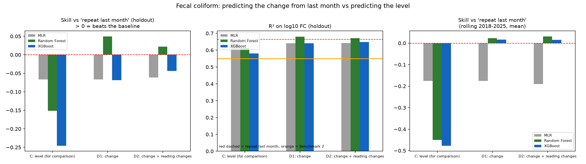
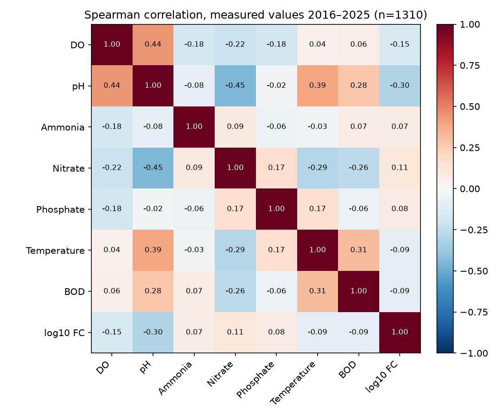
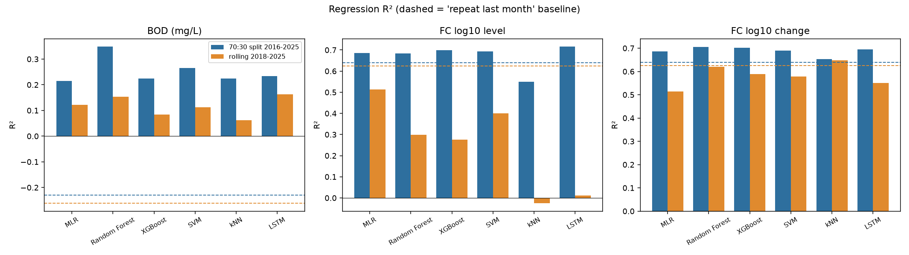
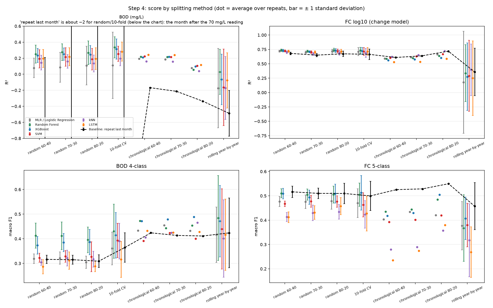

| Group | Tingson · Tidalgo · Manjares |
| Adviser | Jonalyn G. Ebron |
| Data | Laguna Lake Development Authority (LLDA) monthly monitoring, 15 lake stations, Feb 2016 – Dec 2025 |
| Period covered | 4 October 2026 – 16 October 2026 |
| Report date | 16 October 2026 |
| Code | GitHub papadante69/project-lawa-thesis, branch feature/model-improvement (commit 138d8d5) |
| 1 | Executive summary |
| 2 | Timeline of work |
| 3 | System overview: architecture and technology |
| 4 | The website: login, dashboard, soft sensor and API |
| 5 | The dataset: sources, preprocessing and classes |
| 6 | Model development, phase 1: first models (6–9 Oct) |
| 7 | Adviser consultation and the improvement plan |
| 8 | Model development, phase 2: Steps 1–8 (16 Oct) |
| 9 | Final models and results |
| 10 | Decision log |
| 11 | Manuscript alignment, limitations and next steps |
| 12 | How to run and reproduce (for groupmates) |
| A | Appendix: glossary of terms and metrics; file index |
In two weeks the group built a working first version of the Project LAWA system and tested the machine learning (ML) models in detail. The system has three parts:
After the adviser consultation, the models were improved in eight documented steps: correlation analysis and feature selection, class-imbalance techniques, six algorithms with grid-search tuning (MLR/Logistic Regression, Random Forest, XGBoost, SVM, kNN, LSTM), a split-sensitivity test (60-40, 70-30, 80-20, 10-fold, chronological, rolling), a comparison of two ways to predict the DENR class, and tests with and without last month's lab value.
Scores: random 70-30 split of 2016–2025, repeated with 10 different random seeds (average ± standard deviation).
| Output | Model | Inputs | Result (70-30, 10 seeds) |
|---|---|---|---|
| BOD value (mg/L) | Random Forest regression | DO, pH, Ammonia, Nitrate, Temperature, station, month, last month's BOD | R² 0.28 ± 0.11 |
| BOD DENR class (A/B/C/D+) | Separate Random Forest classifier with class weights | same as above | accuracy 76%, macro F1 0.42 |
| Fecal coliform value | Random Forest predicting the change from last month (log10) | DO, pH, station, month, last month's fecal coliform | R² 0.72 ± 0.02 |
| Fecal coliform DENR class (A/B/C/D/Failed) | Taken from the estimated value (DENR limits) | – | accuracy 62%, macro F1 0.53 |
login.html design, connected it to
Supabase Auth (login with email or username), created the profiles table with three roles and
row-level security, and added three test accounts. Merged to main.project-lawa-thesis (main branch), with the thesis PDF
and quarterly reports.train_models.py, BOD class from its own classifier (with confidence), phosphate removed from the form,
model scores from the 70-30 tests shown on the page. Found and fixed a scikit-learn version mismatch (1.8 vs. 1.9.1).| Date | Commit | Description |
|---|---|---|
| 4 Oct | bdc8f88 … 7228e64 | Initial commit; React + Tailwind login page; profiles table migration; username/email login; Supabase Auth; merge of feature/login |
| 7 Oct | a43ad7a | LLDA dataset, preprocessing and first BOD / fecal coliform models |
| 8 Oct | 82e10b6, dc25ba9 | Fecal coliform regression on log10 (Benchmark 2); change-from-last-month experiment |
| 8 Oct | 6436792 | Officer dashboard, soft sensor and Flask API |
| 9 Oct | 8602afe, 1be0361 | Trend arrows on dashboard cards (green up, red down) |
| 9 Oct | 5d3e7f8, 1023433, b57d00d | Colab notebooks (later kept local only); thesis PDF and quarterly reports; README update |
| 16 Oct | b30baa0 | Step 1: correlation analysis and feature selection |
| 16 Oct | 8d04f4b | Step 2: class imbalance techniques |
| 16 Oct | 8988992, a0f6980 | Step 3: SVM, kNN, LSTM and tuning; summary tables |
| 16 Oct | feb19f7, 5871eea | Step 4: split sensitivity; 70-30 decision recorded |
| 16 Oct | 3d3fff9, 1508b6b, 48dae1d | Steps 5–7: class route; with vs. without last month; all models without last month |
| 16 Oct | 138d8d5 | Final models in the website (Step 8 ammonia check, scikit-learn 1.9.1) |
| Part | Technology | Why |
|---|---|---|
| Frontend | React (Vite), Tailwind CSS, React Router, Recharts | Group's planned stack; component-based pages; charts for station trends |
| Login and users | Supabase Auth + PostgreSQL (profiles table, roles, row-level security) | Secure, hashed passwords and password reset by email without writing our own login server |
| Backend / API | Flask (Python), flask-cors, pandas, joblib | Same language as the models; serves data and predictions only (user's decision: Flask handles models and data, never passwords) |
| Models | scikit-learn 1.9.1, XGBoost, imbalanced-learn, PyTorch (LSTM experiments) | Standard ML libraries; versions fixed so results are reproducible |
| Version control | Git + GitHub (private repository) | Team collaboration; feature branches, main only for reviewed work |
frontend/ React + Tailwind website (pages: Login, Dashboard, Soft Sensor) backend/ Flask API (app.py), training script (train_models.py), saved models (models/), helpers (lawa/) ml/ experiments: bod/, bod_class/, fc/, fc_class/ (phase 1) and improve/ (Steps 1–8, phase 2) dataset/ LLDA workbook, transcribed PDF data (preprocessing-v3/), modelling CSVs supabase/ database migration (profiles table, roles, security rules) docs/ this progress report
Branch rule: new work goes on a feature branch (e.g. feature/login, feature/model-improvement)
and is merged to main only when the group has checked it. Secret keys (.env) are never committed.
login.html design.get_email_for_username) and then signs in with Supabase.supabase/migrations/…_create_profiles.sql): username, full name, role, active flag.
Office, position and employee ID were removed at the group's request. A profile is created automatically for every new account.| Method | Path | Returns |
|---|---|---|
| GET | /api/health | status (no login needed) |
| GET | /api/stations | station names and available months |
| GET | /api/overview?month=YYYY-MM | all stations for one month + summary numbers for the cards |
| GET | /api/trend?station=… | monthly history of one station |
| GET | /api/last-values?station=…&month=… | last lab BOD and fecal coliform before that month (auto-fill) |
| GET | /api/models | model names, inputs and test scores |
| POST | /api/predict | BOD and fecal coliform estimates, DENR classes, confidence, typical ranges, warnings |
Every request except /api/health must carry the user's Supabase login token; Flask asks Supabase whether it is
valid. Inputs outside physically possible ranges (e.g. pH outside 0–14) are rejected; inputs outside the training data range
produce a warning.
| Source | Period | Content |
|---|---|---|
| Compiled LLDA workbook from the adviser (previous student's work) | Jan 2013 – Mar 2023 | Monthly lab results per station: BOD, DO, pH, ammonia, nitrate, inorganic phosphate, fecal coliform |
| LLDA quarterly-report PDFs ("NEW YEARS DATASET") | Apr 2023 – Dec 2025 | Same parameters, transcribed from the report tables |
| LLDA temperature report (Temperature.pdf) | 2016 – 2025 | Water temperature per station and month |
| Step | What was done | Why |
|---|---|---|
| Period | Kept Feb 2016 – Dec 2025 | pH and nutrients were not measured in 2013–2015; no Q1 2026 report yet |
| Stations | The 15 original lake stations | Stn. XXIV (Cardona, North Central Bay) only exists from 2025: too few months |
| Parameters | DO, pH, ammonia, nitrate, inorganic phosphate, temperature. No TSS. | TSS was not available for 2016–2023 (user decision) |
| Below detection limit | "<x" stored as x/2 | Same convention as the 2013–2023 workbook |
| Missing values | Linear interpolation within each station for gaps of up to 6 months (marked yellow in the workbook; flagged in the CSVs) | Keeps the monthly series continuous. Filled BOD/FC values are never used as test answers; the adviser approved interpolation |
| Outliers | Flagged (±3 standard deviations), not deleted: 84 rows flagged | Many high values are real events (algal blooms: high DO + high pH + high BOD). An earlier version (v3B) that deleted them was superseded |
| Extreme values checked | BOD 70 mg/L (Sta. Rosa, Sep 2017); nitrate 4.434 (San Pedro, Sep 2018); ammonia 0.500 (South Bay, Jul 2022); ammonia 0.400 (Central Bay, Feb 2023) | All four confirmed in the official LLDA reports, so they are real and were kept |
| DENR classes | BOD and fecal coliform classes added from the latest LLDA report legend | Needed for classification and the dashboard badges |
| Model inputs (built in code) | Station as 15 yes/no columns; month as sine and cosine; fecal coliform on the log10 scale; last month's lab value (same station, at most 3 months earlier) | Seasons wrap around (Dec is next to Jan); FC spans 1.8–1,978, so log10 makes it model-friendly |
| BOD training cap | BOD above 15 mg/L set to 15 for training only (test values never changed) | The single 70 mg/L month otherwise made tree models predict ~60 mg/L for ordinary months |
dataset/preprocessing-v3/merge.ps1. The transcribed
2023–2025 and temperature values should be spot-checked against the PDFs (suspicious temperatures: 36–38 °C in May 2017,
33–36 °C in Jan 2021).| Item | Value |
|---|---|
| Station-months (rows) | 1,346 |
| Rows used for modelling (last month's value available) | 1,322 |
| Filled BOD values / filled FC values | 36 / 9 |
| Rows with an outlier flag | 84 |
| Parameter | Mean | Min | Max |
|---|---|---|---|
| DO (mg/L) | 7.71 | 4.0 | 17.2 |
| pH | 8.31 | 6.3 | 9.8 |
| Ammonia (mg/L) | 0.059 | 0.001 | 1.54 |
| Nitrate (mg/L) | 0.231 | 0.001 | 4.434 |
| Phosphate (mg/L) | 0.135 | 0.001 | 0.89 |
| Temperature (°C) | 28.8 | 20 | 38 |
| BOD (mg/L) | 2.64 | 0.5 | 70 |
| Fecal coliform (MPN/100 mL) | 136 (median 52) | 1.8 | 1,978 |
Rows per year, 2016 → 2025: 99 · 108 · 108 · 108 · 63 · 156 · 164 · 180 · 180 · 180 (fewer stations were sampled before 2021 and in 2020).
| BOD class (DAO 2016-08) | mg/L | Months |
|---|---|---|
| A | ≤ 3 | 1,092 (81%) |
| B | > 3 – 5 | 210 |
| C | > 5 – 7 | 35 |
| D or worse | > 7 | 9 |
| Fecal coliform class (WQG 2021-19) | MPN/100 mL | Months |
|---|---|---|
| A | ≤ 50 | 662 |
| B | > 50 – 100 | 260 |
| C | > 100 – 200 | 182 |
| D | > 200 – 400 | 137 |
| Failed | > 400 | 105 |
Laguna Lake is a Class C water body, so "above standard" means BOD above 7 mg/L or fecal coliform above 200 MPN/100 mL. BOD is strongly imbalanced (81% Class A, only 9 months of D or worse), which is why the adviser saw "puro Class A" predictions and why imbalance techniques were tested (Step 2).
The first models followed the manuscript: MLR as baseline, Random Forest and XGBoost as the ensemble models, evaluated on a time split (train 2016–2023, test 2024–2025). They were later replaced by the phase-2 models (Sections 8–9), but they explain why some design choices were made.
| Version | Inputs | Best model | R² | RMSE (mg/L) |
|---|---|---|---|---|
| A | 6 readings | XGBoost | 0.05 | 1.28 |
| B | + station + month | MLR | 0.09 | 1.25 |
| C | + last month's BOD | MLR | 0.19 | 1.18 |
Finding: the readings explain little of BOD. About 65% of predictions were within ±1 mg/L, but "guess the average" gets 64% because BOD is mostly 1–3 mg/L. Manuscript Benchmark 1 (R² ≥ 0.60) was not met.
| Version | Model | R² (log10) | RMSE (log10) |
|---|---|---|---|
| Baseline | Repeat last month | 0.664 | 0.230 |
| A: 6 readings | MLR | −0.15 | 0.425 |
| B: + station + month | MLR | −0.27 | 0.446 |
| C: + last month's FC | MLR / Random Forest / XGBoost | 0.641 / 0.613 / 0.581 | 0.237 / 0.246 / 0.256 |
| D: predict the change from last month | Random Forest | 0.680 | 0.224 |
Finding: fecal coliform depends mostly on last month's level. Readings alone are worse than guessing the average. Predicting the change from last month (a technique called differencing) was the only model that beat "repeat last month". This became the fecal coliform design used in the system.

Models in the first dashboard (8 Oct): BOD = XGBoost (R² 0.22 on 2024–2025); fecal coliform = Random Forest on the change (R² 0.68). Both were replaced on 16 Oct.
The consultation with Ms. Ebron (with reference to her 2020 paper "Computational and Numerical Modeling for Classification of Water Quality of Lake", which used MLR, ANN, kNN and SVM on Laguna Lake data) gave the following requests.
| Adviser's request | Status | What was done / where |
|---|---|---|
| Correlation analysis; drop weak parameters; check multicollinearity | DONE | Step 1 (Pearson, Spearman, mutual information, RF importance, VIF) |
| Deal with the imbalance ("puro Class A") and use techniques (the panel comments when none are used) | DONE | Step 2 (class weights, oversampling, SMOTE, threshold tuning) |
| Compare SVM against our model; try other models | DONE | Step 3 (MLR/LR, RF, XGBoost, SVM, kNN, LSTM), all tuned by grid search |
| Use 2016–2025 together and try 60-40, 70-30, 80-20 splits and k-fold | DONE | Step 4; decision: random 70-30, 10 seeds |
| Keep the classification models for classifying the class | DONE | Step 5; BOD and FC classes in the system |
| BOD5 computational model: BOD5 = (D1 − D2) / P (unseeded; P = sample volume / diluted volume, e.g. 15/300 = 0.05); Excel template first, then code and a report; validate against LLDA values; synthetic data allowed after an initial talk with LLDA | TO DO | Next priority (Section 11). Wording: the system speeds up the computation; it does not "skip" the 5-day test |
| Literature summary table (her paper and the papers citing it, Sir Gnilo's IEEE paper, LSTM work) with our model added | TO DO | Our results tables (Sections 8–9) are ready to add |
| Manuscript: lab formula as baseline / ground truth; LLDA's current workflow (sampling → lab → Excel with macros → chemist review → report, ~30-day turnaround) | TO DO | Waiting for the go-signal to edit the manuscript |
The adviser questioned the phase-1 time split (2016–2023 train / 2024–2025 test) and asked that train and test come from the whole 2016–2025 period. Both views have merit: a time split shows how the system performs on future months, while a random split uses all years and is what most published studies (including hers) report. Step 4 tested all options so the decision is based on evidence; the year-by-year (rolling) test is kept as a second check.
Each step was walked through before running, saved its results to a new folder (ml/improve/stepN_results/), and
was committed to the feature/model-improvement branch. Earlier results folders were kept.
Why: adviser request; the manuscript's feature-selection protocol. How: four measures on the training years (2016–2023) – Pearson r, Spearman ρ, mutual information and Random Forest permutation importance – combined into one composite ranking; VIF to check multicollinearity. Two selection rules were then tested by training models:
| Rank | BOD | Fecal coliform |
|---|---|---|
| 1 | pH | Last month's FC |
| 2 | Month (season) | pH |
| 3 | Nitrate | Station |
| 4 | Temperature | DO |
| 5 | DO | Month |
| 6 | Last month's BOD | Nitrate |
| 7 | Station | Ammonia |
| 8 | Phosphate | Temperature |
| 9 | Ammonia | Phosphate |
| Inputs | BOD rolling R² | FC rolling R² |
|---|---|---|
| All 9 | −0.17 | 0.17 |
| Rule A | −0.12 | 0.18 |
| Rule B | −0.02 | 0.17 |
Correlations are weak: the strongest for BOD are temperature +0.31, pH +0.28, nitrate −0.26; for FC, pH −0.30 and last month's FC 0.84. Every VIF is below 2 (limit 5): no input is redundant.

Why: 81% of BOD months are Class A, so plain models almost never flag a polluted month. How: Logistic Regression, Random Forest and XGBoost × {none, class weights, random oversampling, SMOTE, decision-threshold tuning, weights + tuning}. Oversampling/SMOTE only inside the training part. Evaluated year by year (2018–2025).
| Scheme | Setup | Macro F1 | Problem months caught | False alarms |
|---|---|---|---|---|
| BOD 4-class | Baseline: same class as last month | 0.31 | 46% | 13.8% |
| BOD 4-class | XGBoost, no technique | 0.34 | 20% | 1.8% |
| BOD 4-class | XGBoost + class weights | 0.37 | 52% | 11.4% |
| BOD 2-class | Baseline: same class as last month | 0.66 | 46% | 13.8% |
| BOD 2-class | Random Forest, no technique | 0.59 | 16% | 0.1% |
| BOD 2-class | Random Forest + class weights | 0.71 | 49% | 8.6% |
| FC 5-class | Baseline: same class as last month | 0.50 | 64% | 4.7% |
| FC 5-class | Best model (XGBoost + SMOTE) | 0.43 | 59% | 7.9% |
Why: the adviser asked to compare SVM (the most common model in the literature) and other models. How: MLR / Logistic Regression, Random Forest, XGBoost, SVM, kNN and LSTM (optional, using sequences of past months). Each tuned by grid search with 5-fold cross-validation inside the training part. Data: one 70:30 split of 2016–2025 (stratified by station and year), plus the year-by-year check.
| Model | BOD R² | FC R² (change model) | BOD 4-class macro F1 | FC 5-class macro F1 |
|---|---|---|---|---|
| MLR / Logistic Regression | 0.21 | 0.69 | 0.30 | 0.47 |
| Random Forest | 0.35 | 0.71 | 0.37 | 0.52 |
| XGBoost | 0.23 | 0.70 | 0.35 | 0.48 |
| SVM | 0.27 | 0.69 | 0.31 | 0.50 |
| kNN | 0.22 | 0.65 | 0.30 | 0.46 |
| LSTM | 0.23 | 0.69 | 0.28 | 0.46 |
| Baseline: repeat / same class as last month | −0.23 | 0.64 | 0.32 | 0.49 |
Single 70:30 split (seed 42). Step 4 repeats this with 10 seeds; those averages are the official results.

Why: the adviser asked to try 60-40, 70-30, 80-20 and k-fold. How: the six tuned models on BOD value, FC value, BOD 4-class and FC 5-class under 8 splitting methods: random 60-40 / 70-30 / 80-20 (10 seeds each), 10-fold cross-validation, chronological 60-40 / 70-30 / 80-20 (oldest months train, newest test) and rolling year by year (8 years).
| Task (best model) | Random 60-40 | Random 70-30 | Random 80-20 | 10-fold | Chrono 70-30 | Year by year |
|---|---|---|---|---|---|---|
| BOD value R² | RF 0.25 | RF 0.28 | RF 0.27 | RF 0.34 | LSTM 0.24 | RF 0.03 |
| FC value R² | RF 0.74 | RF 0.72 | RF 0.74 | RF 0.73 | kNN 0.65 | kNN 0.40 |
| BOD 4-class macro F1 | RF 0.41 | RF 0.41 | RF 0.40 | RF 0.43 | XGB 0.48 | RF 0.48 |
| FC 5-class macro F1 | RF 0.51 | RF 0.51 | XGB 0.51 | XGB 0.51 | RF 0.44 | XGB 0.41 |

Why: the group asked whether the class should come from the regression value or from a separate model. How: same models, same 70-30 splits (10 seeds): route A = separate classifier; route B = predict the value, then apply the DENR limits.
| Class | Model / route | Accuracy | Macro F1 | Problem caught | False alarms |
|---|---|---|---|---|---|
| BOD 4-class | Random Forest, separate classifier | 75.9% | 0.41 | 69% | 18% |
| BOD 4-class | Random Forest, regression → class | 79.2% | 0.40 | 65% | 13% |
| BOD 4-class | Same class as last month | 76.0% | 0.32 | 47% | 14% |
| FC 5-class | Random Forest, separate classifier | 60.8% | 0.51 | 64% | 6% |
| FC 5-class | Random Forest, regression → class | 62.2% | 0.53 | 58% | 3% |
| FC 5-class | Same class as last month | 60.4% | 0.51 | 70% | 7% |
Why: the group questioned whether using last month's lab result fits a "soft sensor" (it is not one of the six water parameters). How: same models and splits, with and without it.
| Random Forest, random 70-30 | With last month | Without last month | Change |
|---|---|---|---|
| BOD value R² | 0.28 | 0.24 | small loss |
| BOD 4-class macro F1 (polluted caught) | 0.41 (69%) | 0.40 (64%) | small loss |
| FC value R² | 0.72 | 0.16 | collapses |
| FC 5-class macro F1 (above standard caught) | 0.53 (59%) | 0.25 (14%) | collapses |
Why: the group asked whether other algorithms could do better without last month. How: all six models re-tuned without it; FC also tested with all six readings and with class weights; 70-30 × 10 seeds + year by year.
| Model (no last month) | BOD R² | BOD class macro F1 | FC R² | FC class macro F1 | FC class accuracy |
|---|---|---|---|---|---|
| MLR / Logistic Regression | 0.18 | 0.32 | 0.19 | 0.28 | 36% |
| Random Forest | 0.26 | 0.39 | 0.17 | 0.32 | 41% |
| XGBoost | 0.21 | 0.35 | 0.19 | 0.32 | 39% |
| SVM | 0.19 | 0.32 | 0.20 | 0.32 | 39% |
| kNN | 0.15 | 0.33 | 0.16 | 0.29 | 34% |
| LSTM | 0.21 | 0.29 | 0.45* | 0.33 | 42% |
FC: inputs pH, DO, station, month; class weights. *The LSTM's FC score is not trustworthy: on the year-by-year test it is the worst model (R² −1.9). Its sequence of past readings acts like a fingerprint of when a month is, so with neighbouring months in training it recalls the FC level of that period instead of learning it from the water chemistry.
Why: ammonia ranked last (9th) for BOD but passed Rule B's |r| ≥ 0.10 threshold. How: final Random Forest models with and without ammonia, 70-30 × 10 seeds.
| BOD, with last month's BOD | R² | Class macro F1 | Class accuracy | False alarms |
|---|---|---|---|---|
| With ammonia | 0.277 | 0.412 | 75.9% | 18.0% |
| Without ammonia | 0.270 | 0.404 | 75.0% | 18.9% |
Trained by backend/train_models.py with the settings found by grid search (Step 3). Scores are measured on lab
results the model never saw; the saved models are then refit on all data.
| Output | Algorithm and settings | Inputs |
|---|---|---|
| BOD value | Random Forest regression, 300 trees, max_features 0.5, min_samples_leaf 1; trained with BOD capped at 15 mg/L | DO, pH, Ammonia, Nitrate, Temperature, station, month, last month's BOD |
| BOD class | Random Forest classifier, 300 trees, max_depth 8, max_features 0.5, class weights "balanced" | |
| Fecal coliform value | Random Forest regression on the change in log10 FC from last month, 300 trees, max_features 0.5, min_samples_leaf 5 | DO, pH, station, month, last month's FC |
| Fecal coliform class | From the estimated value with the DENR limits | – |
| Model | Test | R² | RMSE | MAE |
|---|---|---|---|---|
| BOD value (mg/L) | Random 70-30, 10 seeds | 0.28 ± 0.11 | 1.78* | 0.83 ± 0.07 |
| BOD value | Year by year 2018–2025 | 0.03 | 1.16 | 0.87 |
| Baseline: guess the training average | Random 70-30 | 0.00 | 2.03 | 1.07 |
| Fecal coliform (log10) | Random 70-30, 10 seeds | 0.72 ± 0.02 | 0.28 | 0.21 |
| Fecal coliform (log10) | Year by year 2018–2025 | 0.34 | 0.30 | 0.23 |
| Baseline: repeat last month (FC) | Random 70-30 | 0.65 | 0.31 | 0.22 |
*BOD RMSE varies a lot between seeds (± 1.14) because of the single 70 mg/L month: when it is in the test part, one large error dominates. The median RMSE is used for the "typical range" on the website.
| Model | Test | Accuracy | Macro F1 | Balanced acc. | Problem caught | False alarms |
|---|---|---|---|---|---|---|
| BOD 4-class (classifier) | 70-30, 10 seeds | 76.1% | 0.42 ± 0.06 | 45.0% | 69.5% | 17.9% |
| BOD 4-class (classifier) | Year by year | 79.4% | 0.48 | 47.8% | 44.6% | 10.3% |
| Baseline: same class as last month | 70-30 | 76.0% | 0.32 | 31.8% | 46.9% | 13.7% |
| Baseline: always Class A | 70-30 | 81.2% | 0.22 | 25.0% | 0% | 0% |
| FC 5-class (from value) | 70-30, 10 seeds | 62.4% | 0.53 ± 0.03 | 51.8% | 58.0% | 3.4% |
| FC 5-class (from value) | Year by year | 65.4% | 0.44 | 44.2% | 34.5% | 2.6% |
| Baseline: same class as last month | 70-30 | 62.4% | 0.52 | 52.9% | 69.3% | 6.6% |
"Problem caught" = BOD class B or worse; FC above the Class C standard (D or Failed). Accuracy alone can mislead: "always Class A" has the highest BOD accuracy (81%) but catches no polluted month, which is why macro F1 and "problem caught" are reported with it.
| Benchmark (manuscript) | Result | Status |
|---|---|---|
| 1. BOD regression R² ≥ 0.60 | R² 0.28 (70-30, 10 seeds) | NOT MET |
| 2. Fecal coliform regression R² ≥ 0.55 | R² 0.72 (log10) | MET |
| 3. Ensemble models beat MLR | BOD: RF 0.28 vs. MLR 0.09; FC: RF 0.72 vs. MLR 0.70 (Step 4, 70-30) | MET, NOT YET TESTED STATISTICALLY |
The BOD result is consistent with the adviser's 2020 paper, whose MLR also stayed far below R² 0.60 for BOD. The honest conclusion for BOD is that the six parameters explain only part of its variation; the model's main value is early warning (70% of polluted months flagged).
| Decision | Options considered | Evidence / reason | Who / when |
|---|---|---|---|
| No TSS in the models | Include TSS | TSS not available for 2016–2023 | Group, 6 Oct |
| Use the latest DENR classes | Older class tables | Match the current LLDA report legend | Group, 6 Oct |
| Flag outliers, do not delete | Delete ±3SD values (v3B) | High values are real events; four extremes confirmed in official reports | Group, 8 Oct |
| Interpolate short gaps; never test on filled values | Station mean; drop rows | Keeps the monthly series; the adviser approved interpolation; test answers stay real | Phase 1 |
| Cap BOD at 15 mg/L for training only | No cap; delete the 70 mg/L month | Without a cap trees predicted ~60 mg/L for normal months; the value is real so it is not deleted | 8 Oct |
| FC on log10, predicting the change from last month | Predict the FC level | Only the change model beat "repeat last month" (R² 0.68 vs. 0.66); stays stable on new years | 8 Oct; confirmed Steps 3–5 |
| Inputs: BOD without phosphate; FC with pH, DO, station, month (+ last month) | All 9; Rule A; Rule B | Step 1 accuracy test; ammonia kept after Step 8 | 16 Oct |
| Class weights for BOD classes; none for FC | Oversampling, SMOTE, threshold tuning | Step 2: weights lift polluted months caught from ~20% to ~50% | 16 Oct |
| Keep only BOD 4-class and FC 5-class | 2-class versions | Use the full official DENR class lists | Group, 16 Oct |
| Random 70-30 split, 10 seeds | 60-40, 80-20, 10-fold, chronological, rolling | Step 4: ratio barely matters; adviser's recommendation; year by year kept as a second check | Group + adviser, 16 Oct |
| Random Forest for all outputs | MLR/LR, XGBoost, SVM, kNN, LSTM | Steps 3–4: best or near-best everywhere and most consistent; one algorithm is simpler to explain | 16 Oct |
| BOD class from a separate classifier; FC class from the value | The other route for each | Step 5 comparison | Group, 16 Oct |
| Use last month's lab value for BOD and FC | Parameters only | Steps 6–7: FC collapses without it (R² 0.72 → 0.20); small gain for BOD | Group, 16 Oct (adviser to confirm) |
| scikit-learn 1.9.1 everywhere | Keep 1.8 in the backend | Same data gave 54% vs. 70% polluted caught on 1.8 vs. 1.9.1; the website must match the reported results | 16 Oct |
| Flask never handles passwords | Own users table in Flask | Supabase Auth hashes passwords and handles resets; Flask only checks the token | Group, 4 Oct |
| Login with email or username | Username only | Email allows self-service password reset | Group, 4 Oct |
| Topic | Manuscript now | What was actually done |
|---|---|---|
| Predictors | 7 parameters including TSS | 6 parameters, no TSS; plus station, month and last month's lab value (to be declared and justified with Steps 6–7) |
| Selected inputs | Feature-selection protocol | Step 1 results: BOD without phosphate; FC with pH, DO, station, month |
| Period | Jan 2013 – Mar 2026 (~159 months) | Feb 2016 – Dec 2025 |
| Missing values | Station-level mean | Linear interpolation within station (gaps ≤ 6 months); filled targets never tested |
| Outliers | IQR flag-and-review | Flagged (±3SD) and reviewed; extremes confirmed real and kept |
| Split | Random 70:30 stratified by station | Random 70-30 stratified by station and year, repeated with 10 seeds; plus 10-fold and year-by-year |
| Models | MLR, Random Forest, XGBoost | Six models compared (adds SVM, kNN, LSTM); Random Forest chosen; separate BOD classifier |
| Classification | Not in the benchmarks | DENR class results (accuracy, macro F1, problem months caught) |
| Lab formula and LLDA workflow | Not described | Add BOD5 = (D1 − D2) / P as the ground truth/baseline and the LLDA workflow as motivation |
| Fecal coliform range | "1.8 to 918 after cleaning" | 1.8 to 1,978 MPN/100 mL (outliers kept) |
| # | Task | Details |
|---|---|---|
| 1 | Adviser approval for last month's lab value | Show the Step 6–7 comparison (FC R² 0.20 without vs. 0.72 with) |
| 2 | BOD5 computational model | Excel template (sample, D1, D2, P, BOD5), then code in the system and a generated report; synthetic data after an initial talk with LLDA; validate against LLDA values with a significance test |
| 3 | Literature summary table | Adviser's 2020 paper and the papers citing it, Sir Gnilo's IEEE paper, LSTM studies; add our results |
| 4 | Statistical test for Benchmark 3 | Paired test of Random Forest vs. MLR across the 10 seeds |
| 5 | Colab version of the final models | For groupmates and the adviser to run |
| 6 | Manuscript updates | Items in 11.1, only after the go-signal |
| 7 | Merge feature/model-improvement into main | After the group checks the website |
| 8 | Optional: rainfall as an FC input | Rain washes waste into the lake; PAGASA monthly rainfall could improve FC (future work) |
# Python virtual environments (create on each PC; do not copy .venv folders) python -m venv backend\.venv backend\.venv\Scripts\python -m pip install -r backend\requirements.txt # includes scikit-learn==1.9.1 python -m venv ml\.venv ml\.venv\Scripts\python -m pip install pandas numpy scikit-learn==1.9.1 xgboost matplotlib scipy openpyxl joblib imbalanced-learn ml\.venv\Scripts\python -m pip install torch --index-url https://download.pytorch.org/whl/cpu # only for the LSTM experiments # Website cd frontend npm install
The backend and frontend each need a .env file (Supabase URL and publishable key; VITE_API_URL=http://localhost:5000).
Ask the group for the values. Never commit .env files or the Supabase secret key.
# Terminal 1 – API (from C:\THESIS\backend) .venv\Scripts\python app.py # -> http://localhost:5000 # Terminal 2 – website (from C:\THESIS\frontend) npm run dev # -> http://localhost:5173
If PowerShell says "module 'backend' could not be loaded", you are already inside the backend folder:
run .venv\Scripts\python app.py without the backend\ prefix.
cd backend .venv\Scripts\python train_models.py # prints the 70-30 and year-by-year scores, saves models/*.joblib
Script (run with ml\.venv\Scripts\python) | What it does | Results folder |
|---|---|---|
ml/improve/step1_correlation.py | Correlations, VIF, ranking, input selection | step1_results/ |
ml/improve/step2_imbalance.py | Class imbalance techniques | step2_results/ |
ml/improve/step3_models.py | Six models + grid search | step3_results/ |
ml/improve/step4_splits.py | Split sensitivity | step4_results/ |
ml/improve/step5_class_route.py | Separate classifier vs. regression → class | step5_results/ |
ml/improve/step6_last_month.py | With vs. without last month (Random Forest, XGBoost, SVM) | step6_results/ |
ml/improve/step7_no_last_month.py | All six models without last month, re-tuned | step7_results/ |
ml/improve/step8_ammonia*.py | Ammonia check (without / with last month) | step8_ammonia_results.csv |
Shared code: ml/improve/common.py (data loading, splits, metrics) and ml/improve/models.py (models,
grids, LSTM). Every results folder has a SUMMARY.md with the tables in this report. Project decisions and history are
in ml/PROJECT_NOTES.md.
| Term | Meaning |
|---|---|
| Soft sensor | A model that estimates a value that is slow or expensive to measure (BOD, fecal coliform) from values that are quick to measure |
| BOD | Biochemical Oxygen Demand (mg/L): oxygen used by bacteria to break down organic matter in 5 days; higher = more organic pollution |
| Fecal coliform | Bacteria from human or animal waste (MPN/100 mL); higher = more sewage contamination |
| Regression | Predicts a number (e.g. BOD = 4.2 mg/L); scored with R², RMSE, MAE |
| Classification | Predicts a category (DENR class A/B/C/D); scored with accuracy, macro F1, etc. |
| R² | Share of the ups and downs the model explains; 1 = perfect, 0 = no better than guessing the average, below 0 = worse |
| RMSE / MAE | Typical size of the error (RMSE weighs big misses more). Lower is better |
| Accuracy | Share of months with the correct class. Misleading when one class dominates |
| Macro F1 | Average F1 over the classes, so rare (polluted) classes count as much as common ones |
| Balanced accuracy | Accuracy averaged per class |
| Problem months caught | Share of polluted / above-standard months the model flagged (recall) |
| False alarms | Share of clean months wrongly flagged |
| Baseline "repeat / same as last month" | Copy last month's value or class; a useful model should beat it |
| Class weights | Make rare classes count more during training so the model does not always answer "Class A" |
| Oversampling / SMOTE | Copy (or synthesise) rare-class examples in the training data |
| Grid search | Try every combination of model settings and keep the best one, judged by cross-validation on training data |
| k-fold cross-validation | Split the data into k parts; each part is the test set once |
| Rolling / year-by-year test | Predict each year 2018–2025 using only earlier years, like real use |
| VIF | Variance inflation factor: checks whether inputs repeat each other's information (above 5 = a problem) |
| Differencing ("change model") | Predict how much a value changes from last month, then add that change to last month's value |
| Random Forest | Many decision trees trained on random parts of the data; their answers are averaged (or voted) |
| XGBoost | Gradient boosting: small trees built one after another, each correcting the previous ones |
| SVM / SVR | Support vector machine (classification) / regression: finds the best boundary or curve with a margin |
| kNN | k-nearest neighbours: answers with the most similar past months |
| LSTM | A neural network for sequences that reads several past months in order |
| File / folder | Content |
|---|---|
dataset/Copy of LLDA-Data-2013-2023-Compiled.xlsx | Workbook; use sheet "Preprocessing v4 (flagged)" |
dataset/bod_class_dataset.csv, fc_class_dataset.csv | Modelling data (readings, targets, filled flags, outlier flags, classes) |
dataset/preprocessing-v3/ | Transcribed PDF data (wq.csv, temperature.csv), build and merge scripts |
ml/bod/, ml/bod_class/, ml/fc/, ml/fc_class/ | Phase 1 experiments and results |
ml/improve/ | Phase 2 Steps 1–8, shared code, results folders with SUMMARY.md |
ml/PROJECT_NOTES.md | Decisions, results history and setup notes |
backend/app.py, backend/train_models.py, backend/models/ | API, final training script, saved models |
frontend/src/pages/ | LoginPage, DashboardPage, SoftSensorPage |
frontend/src/lib/glossary.js | All hover explanations |
supabase/migrations/ | Profiles table, roles and security rules |
docs/progress-report/ | This report (HTML source and PDF) |